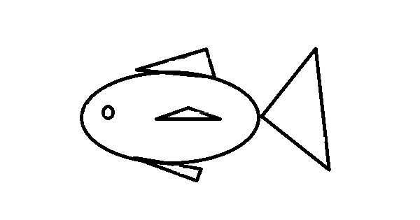

What is a hobby? i am so confused... Let me do some research... Oh I think my Hobby is Fish keeping. I keep fishes. They look so goofy like just Blob Blob. I love them. That is why I drew a picture of them.

Yeah it ended up like this... but you wanna know how my drawing of them improved after I started looking at my fishes for at least 10 minutes a day and researching?

It didn't. In fact my research didn't help me. And I can't be staring at fishes for 10 minutes instead of doing something useful(I just can't sit still looking at some fishes). My drawing skills were too bad just like my patience.
These fishes were here since I was 4. Some of them got eaten some of them died and some of them were brought here and some were born. I was so confused. Why were the fishes eating themselves? The reason was... I forgot to feed them... So I needed to find a way to keep my fishes alive even when I forgot to feed them. Well I just needed to go to the store and buy some pill food.

Now the second problem. The fish water was so dirty. no matter how much I tried to clean it, it just wouldn't work. So I searched through fish stores since the google browser wasn't much of a help to me. I couldn't find the stores that kept the nessecary things. That's when I found a magic liquid in a store far away.
 yeah the fish I erased wasn't my cute fish so...
yeah the fish I erased wasn't my cute fish so...
Okay now there are no other problems...right? THERE IS ANOTHER PROBLEM!
So what happened is almost all the small newborn fishes disappeared. Then my friend who has fishes just like me once visited me. She said "Bro... where are your plants..." then I was like:
So I searched on facebook about water plants and I found the perfect store, went there, got it, lost it, went back, got more, found the lost plant, gave some for my friend and finally placed the plant in my small fish tank. Well this is the reason.